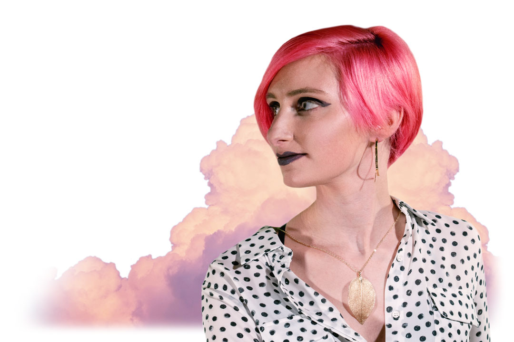
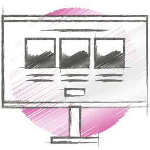
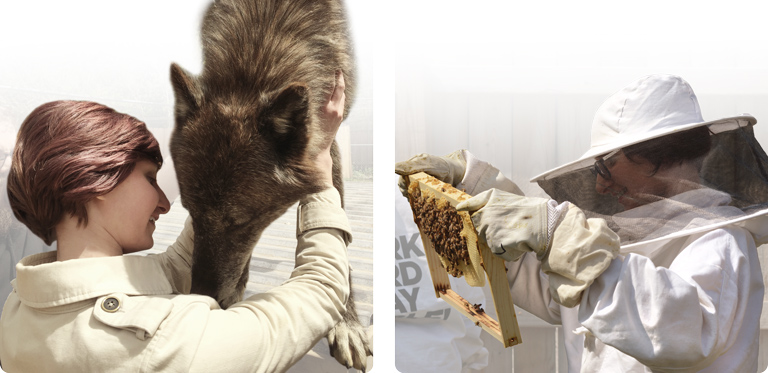

---
layout: default
title: "Home"
subtitle: "The official website for Product Designer Kate Durr"
categories: Kate Durr, Home
--- 

<!-- Start Body wrapper -->
<div class="wrapper-body body-padding">
  <div class="col-md-12">

     <!-- Start main image and the text below -->
     <div class="col-md-12 wow fadeIn" data-wow-delay="0.1s">
          
      </div>
      <!-- End main image and the text below -->

     <!-- Start margin -->
     <div class="margin-collection wow fadeIn" data-wow-delay="0.1s">
         <div class="col-md-12">
           <h3 class="heading-inner">Innovative & Multi-Disciplined Product Designer</h3>
              <div class="hr"></div>
               <div class="top-section">
                I'm a quick-learning, calm-minded creative professional who enjoys helping others achieve their goals through artistic collaboration. I've worked on projects both large and small, far-reaching and local. And I thrive when I work with other genuine, compassionate people. I'm an introvert, and my personality helps give me an observational advantage. If you want to succeed at your passion project, I'm here to make it happen.</div>
         </div>
         <!-- End text -->
         
          <!-- Start portfolio feature -->
          <div class="container">
            <div class="row">

            <a href="web.html">
              <div class="col-xs-3">
                <figure class="icon-hover wow fadeIn">
                  
                </figure>
                <h3 class="heading-inner">Web</h3>
                <div class="hr"></div>
                <div class="portfolio-section">Great UI/UX design provides a positive online experience.</div>
              </div>
            </a>

            <a href="print.html">
              <div class="col-xs-3">
                <figure class="icon-hover wow fadeIn">
                  
                </figure>
                <h3 class="heading-inner">Print</h3>
                <div class="hr"></div>
                <div class="portfolio-section">Gorgeous small and large format print materials that convert.</div>
              </div>
            </a>

            <a href="game.html">
              <div class="col-xs-3">
                <figure class="icon-hover wow fadeIn">
                  
                </figure>
                <h3 class="heading-inner">Game</h3>
                <div class="hr"></div>
                <div class="portfolio-section">Stylized 2D and 3D assets for fun, immersive entertainment.</div>
              </div>
            </a>

            <a href="brand.html">
              <div class="col-xs-3">
                <figure class="icon-hover wow fadeIn">
                  
                </figure>
                <h3 class="heading-inner">Brand</h3>
                <div class="hr"></div>
                <div class="portfolio-section">A clear business identity to attract and maintain clients.</div>
              </div>
            </a>
            
            </div>
          </div>
          <!-- End portfolio feature -->
        
         <div class="text-center">
               <a href="portfolio.html" class="home-btn btn">View portfolio</a>
         </div> 
           
         <div class="bottom-section">
         <!-- Start left column -->
         <div class="col-md-6">
            <p class="text-left">Choosing the right creative professional for your project is an important decision. Fortunately, my site can help. View my <a href="portfolio.html">portfolio</a>, read my <a href="resume.html">resume</a>, then <a href="contact.html">contact me</a> if you think I'm the right fit for your project. I look forward to hearing from you.</p>
         </div>
         <!-- End left column -->
         
         <!-- Start right image -->
         <div class="col-md-6 wow fadeIn" data-wow-delay="0.1s">
            
         </div>
         <!-- End right image -->
         </div>
   
     </div><!-- End margin -->
              
  </div><!-- End col-md-12 -->

</div><!-- End Body wrapper -->